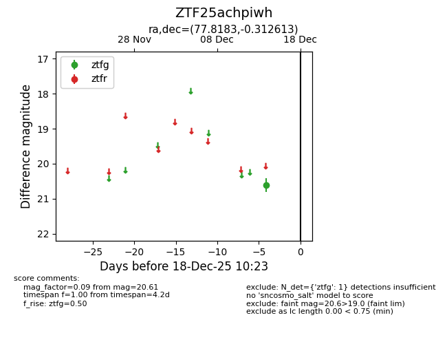
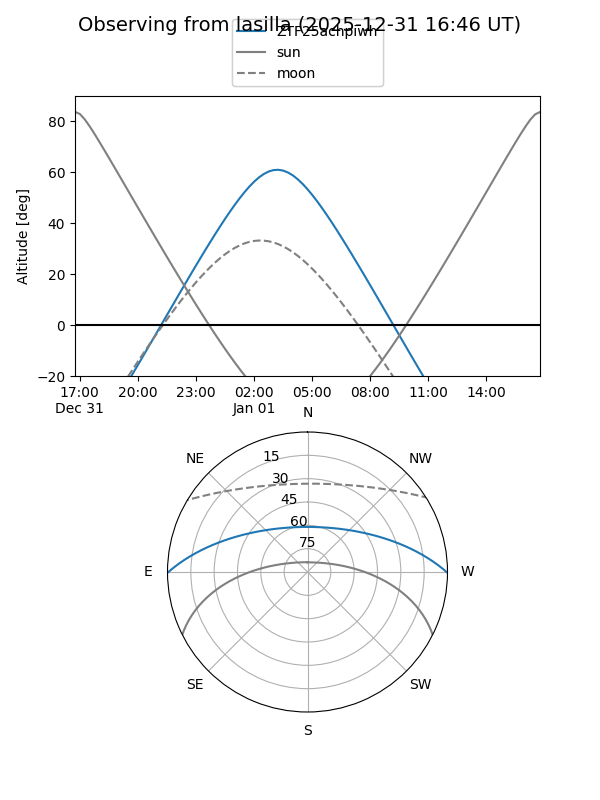
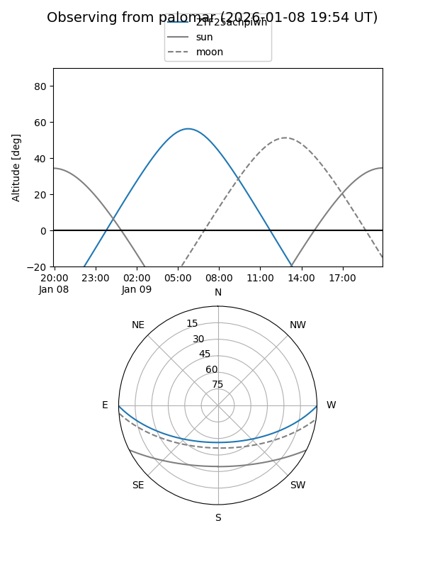

ZTF25achpiwh
Target ZTF25achpiwh at 2025-12-18 11:18
Aliases and brokers:
FINK: fink-portal.org/ZTF25achpiwh
Lasair: lasair-ztf.lsst.ac.uk/objects/ZTF25achpiwh
ALeRCE: alerce.online/object/ZTF25achpiwh
alt names
ZTF25achpiwh (ztf,fink_ztf)
Coordinates:
equatorial (ra, dec) = 77.8183,-0.31261
equatorial (HMS+DMS) = 05:11:16.38,-00:18:45.41
galactic (l, b) = (201.2002,-22.28337)
Photometry
last ztfg=20.61
1 ztfg detections
Lightcurve

Visibility


Additional plots